The tared scale method
Watch the animation below to see how to use the tared scale method. The whole process takes about 30 seconds.

Subtraction Method
Baby's weight
— —
Tips for an accurate reading
- Use a digital scale — they're more accurate than dial scales for small differences.
- Place the scale on a hard, flat floor (not carpet) before weighing.
- Weigh in the same clothing each time so changes reflect your child, not their outfit.
- Re-check your child's weight every 1–3 months — kids grow fast, and the right dose grows with them.
- If your reading seems off, repeat the process to confirm before dosing.